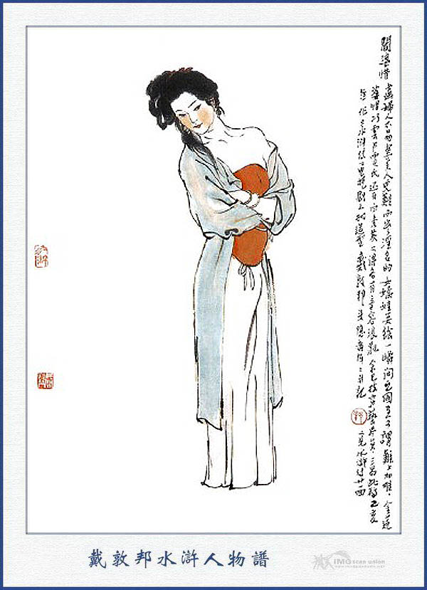
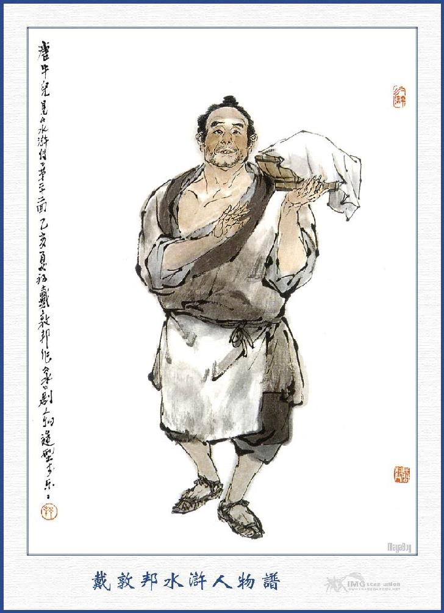
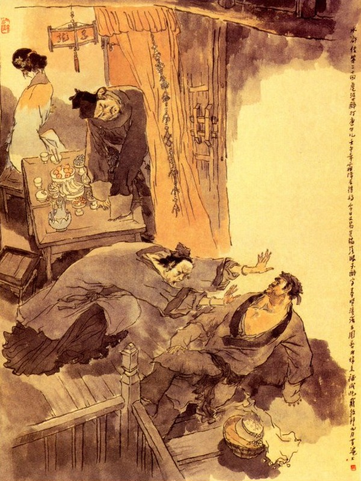
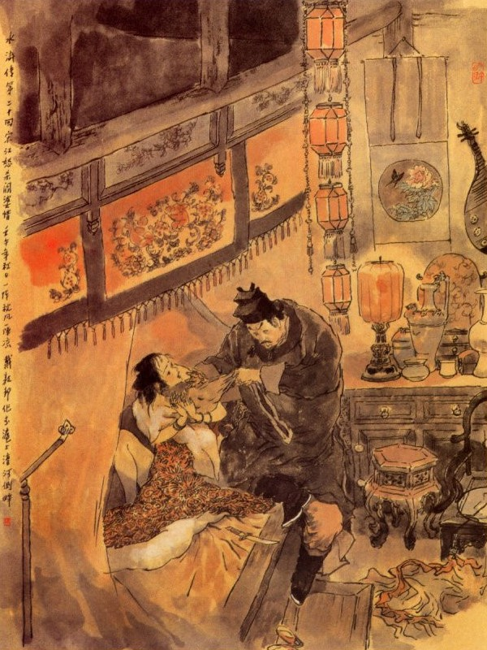

Bấy giờ Tống Giang thấy có tiếng người, liền đứng dừng chân lại, thấy Diêm Bà chạy lật đật đến mà nói rằng:
- Mấy hôm nay tôi cho người mời không thấy Áp Ty đâu cả, con bé nhà tôi nó ngu dại không biết gì, lỡ có điều xúc phạm đến Áp Ty, xin ngài hãy nể lòng tôi mà bỏ qua đi cho rồi tôi sẽ bắt nó nói lại với ngài. Hôm nay được gặp đây, thể nào cũng xin đón về nhà một lúc.
Tống Giang nghe nói đáp rằng:
- Hôm nay trong huyện bận rộn lắm không thể nào về đó được, xin để khi khác vậy.
- Không được, con bé cháu nó đợi ở nhà, thế nào cũng mời Áp Ty chạy qua về một lát, sao Áp Ty lại nỡ lòng như thế?
- Tôi bận lắm thực, để ngày mai tôi về đó.
Diêm Bà nhất quyết rằng:
- Làm thế nào thì hôm nay cũng phải mời Áp Ty cho kỳ được.
Nói đoạn lại níu lấy áo Tống Giang mà rằng:
- Ai đã xúi Áp Ty thế? Con bé nhà tôi suốt một đời nó phải trông cậy vào Áp Ty cả, Áp Ty nên phải tự mình chủ trương lấy, chứ nghe người ta nói nhảm làm chi! Nếu nó có điều gì không phải, xin Áp Ty cứ chắc ở tôi đây mới được. Thôi xin mời Áp Ty về qua đây một lúc.
Áp Ty đáp rằng:
- Bà không nên gàn trở tôi, tôi còn bận nhiều việc quan trọng không thể dứt ra được!
- Việc quan thì dẫu Áp Ty có chậm trễ một đôi chút, quan Huyện cũng chả trách nào, duy tôi hôm nay nếu để cho Áp Ty đi thì khó lòng được gặp nữa! Xin mời Áp Ty đi với tôi, về đó sẽ nói chuyện.
Tống Giang vốn là người nhanh nhẹn dễ dàng, nay bị Diêm Bà rầy rà như thế thì không thể nào từ chối được, liền bảo Diêm Bà rằng:
- Nếu vậy cứ buông áo ra để tôi đi.
Diêm Bà nói:
- Chỉ sợ Áp Ty không về đó thì tôi biết đâu mà theo kịp?
- Có khi nào thế, tôi đã nói là đi chứ gì?
Nghe đoạn Diêm Bà buông áo Tống Giang ra rồi cùng đi về. Khi tới nhà Tống Giang đứng dừng ở ngoài. Diêm Bà đẩy cửa vào mà nói rằng:
- Áp Ty đã về tới đây, có lẽ lại không vào nhà hay sao?
Tống Giang nghe nói bất đắc dĩ bước lững thững đi vào trong nhà, đến một chỗ ghế ngồi xuống đó. Diêm Bà sợ Tống Giang lại chạy trốn, liền quay bên cạnh để ngồi rồi gọi lên rằng:
- Con ơi! Người tâm ái của con là Tam Lang đã về đây.
Bấy giờ Bà Tích đương nằm ở giường trên gác, một mình nghĩ ngợi vẩn vơ bên đôi ngọn đèn chong mà đợi Trương Tam đến. Chợt nghe tiếng mẹ gọi như vậy thì trong bụng đoán chắc Trương Tam ở đó, liền vội vàng ngồi dậy vuốt ve đường tóc rồi nói lảm nhảm rằng:
- Đồ chết toi làm cho người ta đợi khổ! Bà lại cho mấy cái bạt tai cho đáng kiếp!
Nàng vừa nói vừa đi tất tả xuống thang. Dè đâu đi đến chấn song ngó cổ xuống nom thấy ngọn đèn pha lê chiếu sáng, Tống Giang đương cùng Diêm Bà ngồi đó, nàng liền quay ngoắt trở lên mà nằm vật xuống giường như cũ. Bà Tích nằm trên giường nói với xuống rằng:

DIÊM BÀ TÍCH
- Nhà này có xa gì mà người ta không lên đến đây? Người ta cũng chẳng mù chột gì mà phải đợi tôi đón lên mới được? Cần chi phải khẩn khoản như thế?
Diêm Bà nghe vậy mắng con rằng:
- Con ranh, nó không biết Áp Ty đến đây lại còn nói láo nói hỗn ở đây, để Áp Ty lại thêm phiền lòng.
Nói xong lại cười bảo Tống Giang rằng:
- Tôi với Áp Ty ta cùng lên gác vậy.
Khi Tống Giang nghe thấy những lời Bà Tích nói thì trong lòng đã khó chịu rồi, không còn muốn lưu lại một chút nào, sau vì bà lão lôi kéo, nên cũng phải miễn cưỡng mà cùng lên gác. Cái nhà ấy nguyên có mấy gian gác lục lăng, ngăn nửa ngoài kê làm chỗ ngồi chơi, còn nửa trong làm phòng ngủ, kê một bộ giường bình khung hai đầu đều có chấn song, trên treo một bức màn là đỏ, cạnh đầu giường có cái mắc để vắt khăn mặt, một bên để cái chậu thau một cái khăn bao và một bên kê một cái bàn con sơn vàng, trên để cây đèn bằng thiếc. Hai bên góc tường kê hai cái ghế, trên vách trước mặt treo một bức tranh, đối diện giường kê bốn cái ghế ghép hàng chữ nhất đều nhau.
Khi Tống Giang lên gác, Diêm Bà liền kéo vào trong phòng rồi Tống Giang ngồi vào một cái ghế ở góc nhà mà quay mặt vào phía giường. Diêm Bà lại vào giường dựng người con gái dậy mà bảo rằng:
- Áp Ty đã đến kia, con ơi! Sao tính nết con hư thế, cứ nói nọ nói kia, để Áp Ty giận không về đến đây nữa! Lúc không thì lại ngồi nhà mà lo nghĩ, bây giờ ta đã khó khăn mời được Áp Ty về đây, sao con không ngồi dậy nói chuyện, lại còn giở những thói ấy làm chi?
Bà Tích cầm tay mẹ đẩy ra mà nói rằng:
- Bà làm gì mà phải rối lên, tôi có tội gì chưa? Người ta không thèm về đến đây thì bảo tôi nói chuyện làm sao?
Tống Giang nghe vậy cứ ngồi lặng yên. Diêm Bà lại kéo cái ghế chéo kê liền cạnh Tống Giang rồi kéo con gái đến đó mà bảo rằng:
- Con hãy đến đây ngồi với Tam Lang một lúc vậy, không nói chuyện thì thôi, không việc gì phải thế!
Bà Tích không chịu ngồi bên cạnh, liền đến một cái ghế đối diện Tống Giang để ngồi, Tống Giang ngồi cúi đầu xuống mà không nói năng gì cả.
Diêm Bà trông thấy người con gái bấy giờ, có vẻ khác nét mặt, liền nói lên rằng:
- Không tửu không tương, sao thành đạo trường, lão có một bình rượu ở kia, để lấy thêm một ít hoa quả ra đây rồi sẽ nói chuyện với Áp Ty, con cứ ngồi với Áp Ty một lúc, có việc gì mà thẹn, ta đến đây ngay bây giờ.
Tống Giang thấy vậy thì nghĩ lẩm nhẩm một mình rằng: "Cái con mụ già này thực là vô lý, đem nhốt ngay mình vào đây mà không còn thoát ra được nữa. Để con mụ ấy đi xuống gác, ta sẽ xuống sau mà đi quách cho rảnh".
Diêm Bà thấy Tống Giang có ý hơi khác, liền quay trở ra rồi cài trái cửa ngoài đi. Tống Giang thấy vậy, biết rằng Diêm Bà hiểu mình muốn tháo, nên mới phòng bị như thế thì lại lấy làm băn khoăn khó chịu. Khi bấy giờ Diêm Bà xuống dưới gác vào trong bếp thắp đèn lên, thấy có nồi nước đã bắc sẵn đó, liền dóm củi lên đun rồi lấy một ít tiền lẻ chạy tháo ra ngoài phố mua một vài thứ hoa quả cùng là thịt gà, cá tươi đem về bày vào mâm tử tế rồi lấy rượu để vào nồi hâm nóng rót vào hồ, bày thêm các thứ rau và ba đôi đũa, ba cái chén vào mâm mà bưng lên gác dặt ở ngoài phòng. Đoạn rồi mở cửa đem vào phòng trong, bày la liệt trên cái bàn sơn. Khi ấy trông đến Tống Giang thì vẫn cúi đầu xuống mà lặng yên, còn Bà Tích thí lại quay đi nơi khác. Diêm Bà liền nói rằng:
- Con đứng dậy ra đây, mời chén rượu đi con.
Bà Tích đáp rằng:
- Các ngươi cứ uống đi tôi không phiền thế.
Diêm Bà lại khuyên rằng:
- Cha mẹ đã biết tính con thủa bé rồi, nhưng đối với ai, chứ với Tam Lang thì con không nên như thế mới được.
Bà Tích lại đáp luôn rằng:
- Tôi không muốn mời rượu thì không mời rượu, chẳng lẽ phi kiếm lấy đầu tôi hay sao?
Diêm Bà cười rằng:
- Đành thế, ta lại cũng không trách, nhưng Áp Ty là người phong lưu nhân vật, không có bụng gì bao giờ. Con không mời rượu thì thôi, hãy cứ quay lại uống vài chén vậy.
Bà Tích cứ lặng yên không quay mặt trở lại, Diêm Bà rót rượu ra rồi cầm chén đũa mời. Tống Giang bất đắc dĩ phải uống một chén gượng gạo. Diêm Bà cười mà nói với Tống Giang rằng:
- Áp Ty đừng nên trách, những chuyện lôi thôi rắc rối, để mai xin kể rõ Áp Ty nghe, người ngoài họ thấy Áp Ty ở đây cho nên có vài kẻ nóng lòng sốt ruột, đặt điều ra giọng nọ kia, xin Áp Ty chớ để vào tai, Áp Ty hãy cứ uống rượu đi cho.
Nói xong lại rót ba chén rượu nữa, để lên trên bàn rồi bảo với con gái rằng:
- Sao con tính khí trẻ con thế? Hãy quay lại đây uống qua loa một chén đã sao?
Bà Tích nói:
- Việc gì cứ rầy rà đến tôi, tôi no rồi, không thể nào uống rượu được nữa.
Diêm Bà khuyên rằng:
- Con quay lại tiếp Tam Lang vài chén có được không?
Bà Tích nghe nói liền nghĩ thầm trong bụng rằng:
- "Ta đây còn bận nhớ Trương Tam, ai hơi đâu mà tiếp rượu với hắn được. Nhưng nếu không đổ cho hắn say thì tất là họ còn nhiễu mãi, âu là ta miễn cưỡng cho êm câu chuyện đi là xong". Nghĩ đoạn bất đắc dĩ cầm lấy chén rượu uống một nửa.
Diêm Bà thấy vậy cười rằng:
- Con cứ buồn bã mãi, hãy cứ chén tràn đi vài chén, sẽ ngủ có được không? Áp Ty ngồi xơi luôn đi cho vui?
Tống Giang bị Diêm Bà mời chào khan vãn, lại phải uống luôn dăm ba chén nữa. Diêm Bà cũng uống mấy chén rồi lại chạy xuống dưới nhà để hâm rượu. Bây giờ Diêm Bà thấy con gái đã quay lại tiếp rượu với Tống Giang thì trong bụng lấy làm hớn hở mà nói một mình rằng: "Nếu đêm nay giữ được lão ấy ở đây thì tất là hắn quên cả những điều giận dữ, bấy giờ ta lại bám vào hắn một dạo đã rồi lại liệu về sau". Mụ vừa nghĩ vừa lấy làm thích, liền đứng ở trước bếp rót ngay ba chén lớn mà uống luôn mấy hớp. Khi đó nghe trong mình đã phảng phất có hơi rượu, liền rót luôn một chén nữa để uống hết một nữa, còn một nửa lại đổ cho vào bình mà mang lên gác. Khi lên tới gác, thấy Tống Giang lại cúi đầu ngồi yên mà con gái lại quay mắt đi nơi khác. Diêm Bà liền cười mà bảo rằng:
- Làm sao mà hai người như bụi đất cả, không ai nói năng gì thế? Áp Ty ơi! Mình là người đàn ông cũng phải nói dăm ba câu chuyện cho khuây khoả dần dần đi mới được.
Tống Giang đương phân vân trong bụng, thấy Diêm Bà nói thì cũng lặng yên, không nói sao cả, Diêm Bà nghĩ thầm trong bụng rằng:
- Anh chàng này không biết gì cả, cứ cho như mọi ngày mình nói chuyện đùa vậy. Hôm nay ta có phải là chuyện đùa đâu? Bụng nghĩ vậy, liền nói ngang nói dọc, nói ngược nói xuôi, không còn thiếu câu gì.

ĐƯỜNG NGƯU NHỊ
Ở huyện Vận Thành có một anh bán hàng những đồ ướp là Đường Ngưu Nhị, vẫn thường gọi là Đường Nhị Ca, xưa nay hay quanh quẩn ở phố xá mà thỉnh thoảng được Tống Giang cấp đỡ giúp cho. Đôi khi có việc quan việc tư gì đi báo Tống Giang thì lại kiếm được một vài quan tiền để tiêu. Mỗi khi Tống Giang có sai việc gì thì cố sống cố chết để làm, không hề nề quản. Hôm ấy Đường Ngưu Nhị đương bị thua bạc trần trụi, không biết xoay sở vào đâu, liền chạy đến huyện tìm Tống Giang để cầu cứu. Bất đồ đi tới huyện thì không thấy Tống Giang đâu, liền vội vàng quay ra phố để đi tìm. Khi ra phố mọi người quen biết đều hỏi rằng:
- Đường Nhị Ca đi tìm ai mà chạy vội vàng như thế?
Đường Ngưu Nhị nói:
- Tôi đương có việc cần cấp, phải đi tìm cô lão nhưng không thấy đâu cả.
- Cô lão là ai?
- Ấy là ông Tống Áp Ty ở huyện này chứ ai?
Chúng liền bảo Đường Ngưu Nhị rằng:
- Chúng tôi vừa thấy ông ta cùng Diêm Bà mới đi qua đây xong.
Đường Ngưu Nhị nghe nói, trong bụng nghĩ thầm rằng:
- "Phải rồi, con thối thây Bà Tích này, nó vẫn tư thông với Trương Tam, dấu diếm không cho Tống Áp Ty biết, tiếng như vậy, cho nên lâu nay không về tới đó, thế mà hôm nay sao còn lần mò đến làm chi. Cái này chắc là bị con sọm già vờ vĩnh bám lấy thôi chứ gì? Hôm nay ta đương quẫn bách, bất nhược đến đấy tảo mấy quan tiền, đi chén vài chén rượu chơi". Nghĩ đoạn đi đến thẳng nhà Diêm Bà thấy bên trong vẫn còn đèn sáng mà cửa lại không đóng, liền lật đật chạy vào đến thang giá. Khi đến chân thang đã nghe thấy tiếng Diêm Bà đương cười ha hả trên gác, chàng ta liền lẻn bước đi lên ghé vào khe gác dòm thấy Tống Giang cùng Bà Tích đều cúi đầu ngồi im, còn Diêm Bà thì đương ngồi cái ghế ở đầu bàn mà miệng nói thiên hô bát sát không dứt lúc nào. Đường Ngưu Nhị biết vậy, lẻn tót vào cúi chào ba người rồi đứng vào một bên. Tống Giang thấy hắn đến lấy làm dễ chịu, liền liếc mắt bảo cho Đường Ngưu Nhị biết ý, để thoái thoát mời đi. Đường Ngưu Nhị vốn tay ranh vặt, thấy vậy thì hiểu ý ngay, liền nói với Tống Giang rằng:
- Tôi đi tìm ngài mãi không thấy, ngờ đâu ngài ngồi uống rượu ở đây, ngài có thấy sốt ruột gì không?
Tống Giang hỏi:
- Chẳng hay trong huyện có việc gì cần đấy?
Đường Ngưu Nhị nói:
- Áp Ty quên rồi hay sao? Cái việc lúc nãy, quan Huyện hiện đương cho bốn năm người lính đi tìm ngài mãi, nhưng mà không thấy ở đâu cả. Quan Huyện đương gắt ầm lên đấy, Áp Ty phải đứng dậy đi ngay mới được.
Tống Giang làm bộ hoảng hốt mà rằng:
- Nếu cần vậy thì ta phải đi ngay mới được.
Nói đoạn đứng dậy toan đi xuống gác, Diêm Bà nắm giữ lại mà rằng:
- Áp Ty không nên thế. Gớm thực! Đường Ngưu Nhị, ngươi lại đến đây lòe lão à? Đừng múa rìu qua mắt thợ thế nữa? Bây giờ quan Huyện còn ở trong nhà uống rượu vui đùa với vợ con, chứ công việc nào bây giờ. Ngươi nói với ai chứ, với ta đây thì không khi nào ta mắc lừa đâu?
Đường Ngưu Nhị nói:
- Có việc cần, quan Huyện đòi thực, chứ tôi đây nói dối làm gì?
- Thôi đừng láo, hai mắt lão nương đây gọi là sáng suốt hơn pha lê đấy, vừa rồi Áp Ty đưa mắt bảo ngươi, ta lại không biết hay sao? Người ta thường nói: "Giết người còn tha được, chứ gian ý thì dung sao được?”

Nói xong đứng dậy đẩy Ngưu Nhị huỳnh huỵch xuống thang gác. Đường Ngưu Nhị cáu lên mà rằng:
- Làm gì mà phải đẩy người ta thế?
Diêm Bà lại quát lên rằng:
- Mầy phá đường lối kiếm ăn của ta thì có khác gì giết bố mẹ vợ con người ta không? Lại còn to mồm gì, hở thằng nhãi con kia! Bà đánh một chập bây giờ.
Đường Ngưu Nhị sấn vào mà rằng:
- Đây bà đánh đi.
Diêm Bà lại đương lúc chếch choáng hơi men, liền giơ tay tát cho Đường Ngưu Nhị một cái rồi đẩy mạnh ra ngòai cửa, đóng chặt cửa lại mà miệng thì mắng nhiếc lảm nhảm không thôi. Đường Ngưu Nhị phải một cái tát, tức giận vô cùng đứng ngoài cửa mà kêu lên rằng:
- Con khỉ già mày liệu hồn, hôm nay không có Áp Ty ở đây thì gọi là tan nát cửa nhà với ta. Không nay thì mai, nếu ta không kết liễu được mày thì ta không là thằng họ Đường nữa!
Chàng ta hăm hở vỗ bụng vỗ tay nói chán một lúc rồi đi. Bấy giờ Diêm Bà lên gác bảo với Tống Giang rằng:
- Áp Ty ôi! Rõ là vô sự thì dung túng những đứa ấy làm chi? Nó là một thằng chè rượu loang toàng, đi đến đâu là nói quàng nói xiên, ai còn không biết. Những đồ quỷ sống ấy thì cho nó đến cửa đến nhà làm gì cho thêm bận!
Tống Giang vốn là người chân thực xưa nay, cho nên thấy mụ nói trúng vào bệnh của mình thì ngồi ngây người ra mà không nói được câu nào nữa.
Diêm Bà lại nói rằng:
- Xin Áp Ty đừng trách tôi, tôi có trọng Áp Ty thì mới thế. Đã lâu con gái tôi với Áp Ty không gặp nhau, hôm nay uống rượu xong chắc là phải đi nghỉ sớm mới được. Để tôi dọn dẹp đi thôi.
Nói xong mời Tống Giang uống thêm mấy chén rượu nữa rồi vội vàng thu dọn mà đi xuống bếp. Tống Giang ngồi trên gác nghĩ chuyện Bà Tích đối với Trương Tam, dẫu có tiếng đồn như vậy, nhưng mắt mình chưa nom thấy cũng không chắc rằng có thực hay không? Vả chăng đêm cũng hơi khuya, đi đâu cũng không tiện, chàng liền định kế nằm tạm ở đó, để xem người đàn bà kia xử trí ra sao? Chợt đâu lại thấy Diêm Bà ở dưới nhà chạy lên mà nói rằng:
- Đêm đã khuya rồi, hai người đi nghỉ đi kẻo muộn.
Bà Tích thấy mẹ nói, liền ứng lên rằng:
- Không việc gì đến bà, bà cứ đi ngủ.
Diêm Bà lại cười khanh khách, vừa bước chân xuống vừa nói rằng:
- Áp Ty đi xuống bếp, dọn xong rồi rửa chân rửa tay mà tắt đèn đi ngủ.
Bấy giờ Tống Giang ngồi ở trên gác, liếc mắt trông Bà Tích rồi lại thở dài mà không nói gì cả. Được một lát, Bà Tích để nguyên quần áo trèo lên giường tựa vào gối thêu rồi quay mặt vào trong vách mà ngủ. Tống Giang thấy vậy nghĩ thầm rằng: "Con bé này lạ thực, nó bỏ mình đây rồi vào ngủ trước là nghĩa lý gì? Hôm nay mình bị con mụ già dắt về đây, bắt uống rượu uống chè rồi lại nói ngon nói ngọt làm cho mình thêm khó nghĩ trong lòng. Thôi bây giờ đêm đã khuya rồi cũng đành phải đi ngủ vậy chứ, còn biết sao giờ?” Chàng nghĩ vậy liền bỏ khăn lên bàn, cởi xiêm áo ngoài vắt lên trên giá, treo thắt lưng, dao túi cùng văn thư lên chỗ chắn song ở trên giường rồi cởi bỏ giầy ra nằm ở phía sau Bà Tích. Nằm một lát vào khoảng nửa canh hai, Bà Tích vẫn nằm quay mặt mà còn cười nhạt một mình, Tống Giang thấy vậy, trong lòng càng buồn bực khó chịu không sao ngủ được.
Đêm vui nào được bao lâu
Đêm buồn mong trước mong sau càng dài.
Lạ cho là giống trên đời,
Xưa nay gươm phấn giết người bao phen!
Tống Giang nằm nghĩ vơ vẩn dần dần sang trống canh ba, hồi lâu lại sang trống canh tư, lại cho sang đến canh năm mà cũng không sao nhắm mắt cho yên. Chàng bèn trở dậy đến thau nước rửa mặt, đội khăn mặc áo chỉnh tề rồi lẩm bẩm mắng rằng:
- Giống hèn hạ, nó vô lễ thực!
Bấy giờ Bà Tích cũng còn thức, nghe thấy tiếng Tống Giang mắng thì quay mặt ra mà nói rằng:
- Người thế mà không biết dơ.
Tống Giang nghe nói thì trong lòng càng lấy làm khó chịu, đành phải nín lặng quay ra đi xuống thang gác. Diêm Bà nghe thấy tiếng người ở trên gác đi xuống thì vội vàng trở dậy mà nói rằng:
- Áp Ty hãy ngủ một lúc nữa, trời sáng sẽ dậy có được không, có việc gì mà phải dậy từ canh năm như vậy?
Tống Giang nghe hỏi, cứ lặng yên mở cửa ra đi. Diêm Bà lại nói luôn rằng:
- Áp Ty đi rồi, khép cửa lại cho tôi nhé!
Tống Giang lại lùi lũi đi ra và khép vào tử tế rồi trong bụng vừa tức bực buồn cười, lững thững bước ra đi. Khi gần tới cửa huyện thấy có một ngọn đèn con lấp ló ở đó, Tống Giang liền dấn bước đến nơi thì thấy lão Vương Công là anh hàng thang đã ra chợ sớm ở trước cửa huyện để bán. Lão ta trông thấy Tống Giang đi đến liền hỏi ngay rằng:
- Áp Ty đi đâu mà sớm thế?
- Đêm qua say rượu nghe lầm tiếng trống canh dậy sớm quá.
- Nếu vậy Áp Ty uống nhiều rượu quá, xin ngài xơi một bát thang nhị trần cho giải rượu.
- Tốt lắm, đem đây tôi ăn một bát.
Tống Giang nói xong chạy đến ghế để ngồi, Vương Công múc một bát thang nhị trần, đương nóng nghi ngút đưa lên cho Tống Giang. Tống Giang ăn xong chợt nhớ đến: "Mọi khi thỉnh thoảng vẫn ăn thang của lão này, lão ta không chịu lấy tiền. Bởi thế ta có hứa cho lão cỗ áo quan mà vẫn chưa cho được. Nay nhân tiện có món tiền của Tiều Cái đưa cho đây, âu là đãi hắn ta một số tiền mua quan tài thì chắc là lão ta thú lắm!” Nghĩ đoạn liền bảo Vương Công rằng:
- Mọi hôm tôi vẫn hứa cho lão cỗ quan tài mà chưa cho được, nay nhân có tiền đây, tôi đưa cho lão, để lão ra nhà Trần Tam Lang mua lấy một cỗ áo quan; đem về để sẵn ở nhà, phòng khi trăm tuổi về sau, đỡ phải lo phiền việc ấy nữa.
Vương Công nói:
- Ân chủ ngài vẫn có lòng giúp đỡ cho lão tôi nhiều, nay lại cho tiền để lo hậu sự như thế, kiếp này lão tôi không báo đáp được thì kiếp sau xin làm thân trâu ngựa để đền ơn.
Tống Giang cười rằng:
- Có làm chi cái đó mà phải nói ơn.
Nói đoạn sờ tay vào trong áo để lấy túi giấy và tiền thì bỗng kinh ngạc mà nghĩ thầm rằng: "Khổ chưa! Túi văn thư lại bỏ quên ở giường con khỉ ấy rồi, mình vội nóng đứng dậy, đi không nhớ đến. Mấy lạng vàng thì chẳng làm chi, nhưng còn bức thư của Tiều Cái, đã định đốt ngay trước mặt Lưu Đường ở trong hàng rượu nhưng nghĩ thế không tiện nên hãy tạm để vào đấy rồi sẽ đốt sau. Ai ngờ lại bị con mụ già nó bắt mình lôi thôi đến đó, con ranh nó lại võ vẽ biết năm ba chữ, ngộ lỡ nó xem ra thì có nguy không?” Chàng nghĩ vậy liền đứng dậy bảo Vương Công rằng:
- Ông lão ơi! Tôi quên mất rồi, vẫn tưởng tiền để trong túi đây, sai ngờ bỏ quên mất ở nhà rồi. Lão hãy yên tâm, để tôi về lấy rồi sẽ đem ra đây cho lão ngay lập tức.
Vương Công cười đáp rằng:
- Thôi, Áp Ty cần gì phải lấy, để hôm nào Áp Ty cho tôi cũng được chứ sao?
Tống Giang nói rằng:
- Tôi còn có việc cần ở đây cũng không nên, phải về lấy ngay mới được.
Nói xong lật dật chạy về nhà Bà Tích, Bà Tích từ lúc Tống Giang đi ra cửa rồi, liền ngồi dậy nói lảm nhảm một mình rằng: "Lão quái! Làm cho bà suốt đêm không ngủ được, cái mặt ấy lại toan bắt bà phải làm lành, nhưng phải biết rằng bây giờ bà có Trương Tam rồi, bà còn hơi đâu mà tiếp đến người ấy nữa. Từ nay trở đi không về đến đây, lại càng hay lắm!” Nàng vừa nói vừa giở chăn ra rồi cởi áo trên, rút quần ngoài mà toan đi ngủ lại. Chợt đâu trông thấy bên chắn song ở cuối giường thấy có một cái thắt lưng da lụa đỏ vắt ở đấy, nà liền cười mà nói rằng:
- "Thằng cu Hắc Tam Lang này đáng kiếp, còn bỏ quên cái thắt lung đây, bà hãy cất lấy, để cho Trương Tam thắt đã".
Nói đoạn giơ tay vớ lấy thắt lưng và cả con dao túi treo ở trên đo, để xem. Khi cầm thấy hơi nặng liền giũ ra xem thì thấy trong ấy có một cái túi giấy, lại có một thỏi vàng ở đó. Nàng cầm lấy soi lên đèn, quả nhiên là vàng thực, liền cười ha hả mà rằng:
- Đây là trời cho ta và Trương Tam đây, may quá, mấy hôm nay Trương Tam đương không có gì, xem hôm nay có thú không?
Nói rồi liền bỏ vàng lên bàn mà mở bức thư ra xem. Trên đầu thư thấy viết hai chữ Tiều Cái rồi xuống dưới có những việc quan hệ rắc rối cũng nhiều. Nàng xem xong lắc đầu mà nói rằng:
- Xưa nay ta vẫn cho là thùng rơi xuống giếng, ai ngờ ngày nay giếng cũng rơi vào thùng, ta đương muốn cùng với Trương Tam kết làm phu phụ, chỉ tại vì có mày ngăn trở hóa không xong, phen này có lẽ khó lòng mà tránh khỏi tay ta được! Nguyên mày thông đồng với tụi cướp Lương Sơn, cho nên nó mới đưa trăm lạng vàng đến để biếu đây. Được rồi, để bà tiêu khiển cho mày một dạo. Hãy xem phong thư và tiền nong để cả túi này mày có tài thánh cũng không đến đây mà lấy lại được nữa!
Gớm cho cái nọc nữ nhi
Thế gian còn có giống gì độc hơn?
Trách nào những kẻ non gan
Mấy phen nước mất nhà tan vì tình!
Đương khi Bà Tích đắc sách một mình thì bỗng nghe dưới nhà có tiếng kẹt cửa rồi có tiếng người trong giường hỏi lên rằng:
- Ai đấy?
Người ngoài cửa đáp:
- Tôi đây.
Người trên giường lại nói:
- Tôi đã bảo còn sớm, Áp Ty không nghe bây giờ quả nhiên lại phải trở về đó. Thôi hãy lên nghỉ với. một lúc rồi sáng ngày sẽ đi.
Người ấy nói dứt lời thì đã có tiếng giầy bước lên trên gác. Bà Tích nghe đích xác là tiếng Tống Giang đã đến, vội vàng cuốn dây lưng túi giấy và dao vào một cuộn rồi đút xuống dưới chân mà nằm quay vào vách vờ làm mặt ngủ. Tống Giang lên đến nơi, xông vào chỗ chắn song, không thấy thắt lưng đâu, trong bụng đã bồn chồn kinh sợ, đành phải nén lòng giận mà lấy tay lay người đàn bà dậy rồi nói rằng:
- Nàng ơi! Nàng trả lại túi giấy cho tôi.
Bà Tích nghe tiếng, giả vờ là ngủ không trả lời. Tống Giang gượng cười mà nói rằng:
- Nàng đừng giận tôi, mai tôi sẽ nói lại với nàng.
Bấy giờ Bà Tích sẽ nói lẩm bẩm rằng:
- Bà đương ngủ mà ai lại đến quấy nhiễu thế?
- Nàng đã biết là tôi rồi, lại còn giả cách làm chi thế?
Bà Tích trở mình ra phía ngoài mà nói rằng:
- Hắc Tam Lang, chàng nói gì đó?
Tống Giang nói:
- Nàng trả lại cho tôi cái túi giấy?
- Chàng đưa vào tay tôi từ lúc nào mà lại hỏi đến tôi?
- Tôi bỏ quên ở chắn song gần giường đây, chắc chỉ có nàng bắt được, chứ còn ai đến đây mà lấy?
- Nói lạ! Chàng nói chuyện ma quỷ gì chắc?
- Đêm qua tôi có điều gì không phải, để sáng mai tôi xin nói lại. nàng trả cho tôi, đừng nên đùa thế?
- Tôi đùa với chàng làm gì? Tôi không bắt được thì trả làm sao?

Lúc nãy nàng vẫn mặc nguyên quần áo, bây giờ đã cởi cả ra, lại đắp chăn ngủ thì tất là nàng bắt được của tôi.
Bà Tích trợn ngay mắt mà rằng:
- Bà lấy thực đấy, nhưng mà bà không trả, tha hồ cho đi đến phủ huyện nào mà kêu là ăn cướp thì kêu.
Đàn bà đến thế thì thôi,
Gian dâm đanh ác giết người không dao.
Ở đời nhắn bạn mày râu,
Trông gương tày liếp liệu sau mà chừa!
Tuồng chi chăn chiếu thập thò,
Anh hùng tan nát cơ đồ nữa sao?
Bấy giờ Tống Giang thấy Bà Tích nói vậy cũng còn đấu dịu mà rằng:
- Khi nào tôi lại dám bảo nàng ăn cướp.
Bà Tích làm già lên rằng:
- Phải biết bà đây không phải cướp đâu?
Tống Giang nghe vậy càng lấy làm nóng ruột, đành phải đấu dịu cho xong, liền nói rằng:
- Xưa nay tôi có điều gì không phải với mẹ con nàng thì xin nàng trả lại cho tôi, tôi còn phải đi có việc bấy giờ.
- Mọi khi vẫn hằm hằm cho là bà đi lại với Trương Tam, dẫu có điều gì cũng chưa đến phạm tử tội, như thằng thông đồng với bọn cướp kia.
- Chết nỗi, nàng chớ nên nói to, lỡ hàng xóm nghe thấy thì nguy lắm.
- Đã sợ người ngoài nghe tiếng, sao còn làm thế được? Cái phong thư thế nào bà cũng giữ chặt lấy, bao giờ nghe bà ba điều thì mới buông tha cho.
Tống Giang nói:
- Cứ gì ba điều, dẫu đến mười điều tôi cũng nghe theo cả.
Bà Tích nói:
- Chỉ sợ không theo được thôi.
- Làm được thì tôi theo ngay, hãy cứ nói tôi nghe xem những điều gì?
- Điều thứ nhất: Từ hôm nay phải đem tờ văn tự mua tôi dạo trước, trả lại cho tôi; mà viết thư cho tôi cải giá với Trương Tam, không được lôi thôi gì đến nữa.
- Được rồi.
- Điều thứ hai: Các đồ tôi gài giắt trên đầu, đồ tôi mặc ở mình, cùng các thứ khí dụng trong nhà, phải viết một bức thư trao cho tôi, từ nay trở đi không được đến lấy vào đấy.
- Được lắm.
- Còn điều thứ ba: Thì khí khó, chỉ sợ không theo được thôi.
- Có khi nào, hai điều kia còn nghe được, nữa là còn một điều nữa?
- Vậy thì cái món tiền một trăm lạng vàng của Tiều Cái ở Lương Sơn Bạc đưa đến đây, phải giao cho tôi rồi tôi sẽ trả lại cho cái túi giấy và tha cho cái tội tày trời ấy, Tống Giang ngẩn người ra mà rằng:
- Các điều trên, tôi xin theo cả, duy còn một trăm lạng vàng ấy thì tôi không nhận của họ, nếu có thì tôi xin đưa nàng ngay lập tức bây giờ, chứ không khi nào dám tiếc.
Bà Tích lắc đầu mà rằng:
- Phải biết rằng: "Quan thấy tiền như ruồi thấy máu". Không lẽ nào nó đưa tiền cho người ấy mà không nhận bao giờ? Anh đừng nói những câu buồn cười như thế? Mèo nào là mèo không biết ăn mỡ, của vua Diêm Vương bao giờ có tha quỷ về không? Muốn tốt thì đưa trăm lạng vàng ấy đây mới được; nếu có sợ tang chứng trộm cướp thì cứ đưa ngay đây.
Tống Giang cố cầm lòng mà đáp rằng:
- Nàng phải biết tôi đây là một người rất thực, không khi nào lại nói dối ai, nếu nàng không tin thì tôi hạn cho xin ba ngày, để tôi về bán đồ đạc nhà cửa lấy trăm lạng vàng đưa đến cho nàng, bây giờ nàng hãy cho tôi xin cái túi ấy đã.
Bà Tích cười nhạt đáp rằng:
- Anh Hắc Tam Lang buồn cười thực, anh lừa tôi như lừa đứa trẻ con vậy. Bây giờ tôi đưa giấy cho anh rồi ba hôm nữa mới đến anh để hỏi tiền thì có khác gì bắt chạch đằng đuôi không? Tôi cứ là tiền trao cháo múc, bác cứ đem đến đủ tiền đây là tôi đưa ngay.
- Hiện bây giờ tôi không có đồng nào.
- Vậy thì sáng mai vào chỗ công đường cũng nói là không có tiền có được không?
Tống Giang nghe đến hai chữ công đường thì máu nóng đầy lên, không thể nào nhịn được, liền trợn mắt lên hỏi người đàn bà rằng:
- Mầy có trả lại ta hay không?
Bà Tích đáp rằng:
- Hung tợn thì làm gì ai, bà không trả có được không?
- Thực không trả phải không?
- Không trả. Ta truyền cho một trăm tiếng không trả nữa đấy. Nếu mà trả thì cứ đến huyện Vận Thành mà lấy.
Chước đâu nham hiểm lạ đời
Thoạt nghe ai cũng rụng rời chân tay!
Mấy người nam tử xưa nay,
Trông gương trước đấy phỏng tày liếp chưa?
Tống Giang nghe nói, liền giằng chăn ra để tìm. Bà Tích ôm chặt lấy vào trong bụng để giữ. Tống Giang hết sức kéo một cái thực mạnh thì thấy cuộn thắt lưng lòi ra ở đấy, chàng liền vội thò tay cướp lấy. Bà Tích cứ giữ khăng khăng. Tống Giang giằng mãi không thể nào lấy ngay ra được. Sau khi hai người giằng co mãi thì con dao túi ở trong bọc, bỗng rơi ra ngoài. Tống Giang liền vơ lấy dao cầm lăm lăm ở tay, Bà Tích thấy vậy kêu lên rằng:
- Hắc Tam Lang giết người hay sao?
Tống Giang nghe tiếng kêu khi ấy thì trong lòng bừng bừng tức giận nghĩ ngay ra cách trừ đi mới xong. Khi ấy Bà Tích định kêu lên tiếng nữa thì tay tả Tống Giang đã nắm chặt lấy Bà Tích rồi tay hữu giơ dao cho một nhát vào giữa thái dương phọt máu tươi ra như suối chảy.
Mới hay:
Anh hùng khi đã ra tay,
Trời kia cũng chuyển đất này cũng tan.
Huống chi một gái dâm ngoan,
Ngựa dày voi xé dễ còn ai thương!
Bây giờ giống lưỡi không xương,
Phỏng còn ngoắt ngoéo trăm đường nữa chăng?
Tống Giang đâm Bà Tích một nhát, sợ rằng chưa chết hẳn, liền cầm dao tặng luôn mấy nhát nữa lăn cổ xuống dưới gối rồi vội vàng vớ lấy túi giấy, mở phong thư châm đèn đốt rồi thắt lưng lên tử tế mà đi xuống gác. Diêm Bà nằm ở dưới nhà, lúc nghe tiếng con gái kêu: "Hắc Tam Lang giết người". Thì trong bụng không hiểu ra làm sao, bèn vội vàng nhảy bổ, mặc xống áo rồi đi xộc lên gác.
Vừa hay mới hết thang gác thì chạm ngay phải Tống Giang đi xuống, Diêm Bà liền hỏi rằng:
- Hai người làm gì ở trên ấy mà ầm ầm lên thế?
Tống Giang nói:
- Con gái bà nó vô lễ quá, bị tôi giết đi rồi.
Diêm Bà cười rằng:
- Nói làm gì thế, có lẽ Áp Ty thấy trái mắt, hay là uống rượu say sưa mà thích giết người như thế hẳn? Thôi đừng nói đùa lão nữa!
- Bà không tin cứ lên buồng mà xem, tôi giết thực rồi đó.
Diêm Bà nói:
- Tôi không tin chút nào.
Nói xong đẩy cửa buồng vào xem thì máu chảy lênh láng khắp buồng mà xác con gái đã nằm chết vật ra đó.
Diêm Bà kêu lên rằng:
- Khổ quá! Bây giờ làm thế nào?
Tống Giang nói:
- Tôi đây là tay hảo hán, không bao giờ lại chịu chạy trốn, vậy bà muốn sao tùy ý.
Diêm Bà điềm nhiên bảo Tống Giang rằng:
- Con bé này nó không ra gì, Áp Ty giết cũng không lầm, duy có một điều là thân tôi già yếu, không ai nuôi nấng cho đây?
Tống Giang đáp:
- Cái đó không cần gì, cứ như lời bà nói thì bà không phải lo. Nhà tôi cũng không đến nỗi túng, tôi xin nuôi được bà no ấm suốt đời thì thôi.
- Nếu thế hay lắm! Cám ơn Áp Ty. Còn sự con bé chết đây thì tống táng làm sao?
- Việc ấy dễ lắm, chỉ ra nhà Trần Tam Lang mua một cỗ quan về đây là xong rồi, còn các đồ khâm liệm và chi phí thì tôi sẽ đưa mấy lạng bạc cho bà lo liệu.
- Hay là bây giờ nhân lúc chưa sáng, ta nên đi mua áo quan đem về chôn ngay thì hàng xóm không ai biết được.
- Được lắm, bà đem giấy bút đây, tôi viết mấy chữ cho bà đi lấy áo quan.
- Không nên viết giấy, bây giờ Áp Ty đi với tôi thì họ mới giao ngay cho.
Tống Giang khen phải rồi hai người cùng đi xuống gác. Diêm Bà mang khóa ra khóa trái cửa lại rồi hai người cùng đi về lối trước cửa huyện, để ra nhà Trần Tam Lang.
Khi gần đến phía tả cửa huyện thì trời mới sáng mà cửa huyện vừa mới mở xong, Diêm Bà liền túm lấy Tống Giang rồi giở mặt mà kêu ầm ĩ lên rằng:
- Có kẻ giết người ở đây.
Tống Giang ngạc nhiên kinh hoảng, vội giơ tay bịt mồm Diêm Bà lại, song mụ ta cứ lăn lóc kêu hoài, không ai giữ nổi. Bấy giờ có mấy người trong huyện chạy ra, trông thấy Tống Giang thì túm đến, khuyên mụ kia rằng:
- Mụ im mồm đi, Áp Ty không phải là người thế đâu? Có việc gì cứ nói tử tế. Diêm Bà lại kêu rằng:
- Chính nó là thằng hung thủ, nhờ các ông bắt nó mà giải vào huyện cho tôi.
Tống Giang vốn xưa nay là người rất tốt trên dưới ai cũng kính yêu, bởi thế nên bọn lính tráng không hề anh nào tin lời mụ Diêm Bà nói mà cũng không anh nào động đến Tống Giang.
Đương khi mụ kêu gào ầm ĩ thì Đường Ngưu Nhị rửa một mâm gừng muối ở đâu đi về đó. Đường Ngưu Nhị thấy Diêm Bà đương níu lấy áo Tống Giang thì chợt nhớ tới câu chuyện tối hôm qua thì trong lòng nổi giận đùng đùng, liền vội vàng đem mâm gừng để vào cái ghế của anh hàng bán thuốc rồi hăm hở chạy ra quát lên rằng:
- Con khỉ già kia làm gì mà níu áo Áp Ty như thế?
Mụ kia vừa kêu vừa nói rằng:
- Đường Ngưu Nhị mày đừng đến đây mà đánh tháo cho người, mày phải đền mạng.
Đường Ngưu Nhị nghe nói cả giận, chạy thốc vào cầm lấy tay mụ kia dằng hẳn ra rồi tát lấy tát để làm cho mụ kia không biết lối nào mà mở mắt, đành phải buông Tống Giang ra. Tống Giang được thoát tay Diêm Bà, liền thừa lúc náo nhiệt cất lẻn chạy ngay để tháo thân. Diêm Bà luống cuống, không biết làm thế nào, lại túm ngay lấy Đường Ngưu Nhị mà kêu lên rằng:
- Tống Áp Ty giết con gái tao, bây giờ mày lại đây, mày đánh tháo ra rồi, trời ơi!
Đường Ngưu Nhị kinh ngạc nói rằng:
- Nào rằng: biết đâu đến chuyện ấy.
Diêm Bà lại kêu: - Nhờ các ông bắt hộ tôi thằng giặc con này, không có thì rầy rà đến cả bây giờ?
Khi đó bọn lính thấy Tống Giang không còn ở đó, liền bảo nhau chạy đến, anh thì bắt lấy Diêm Bà, anh thì nắm lấy Đường Ngưu Nhị mà kéo cả vào huyện. Cho hay là:
Lòng kia hồ dễ như ai,
Chung thân vơ vẩn quanh nơi chiếu giường.
Đã lòng nặng với bốn phương,
Dẫu cho nát đá tan vàng cũng thây!
Vẻ chi một mảnh bèo mây,
Toan đem mặt phấn mà ngây dạ hùng.
Thế gian bao kẻ nông lòng,
Từ nay những ngón ăn không liệu chừa.
Chớ nên quen thói mập mờ,
Lỡ khi sấm sét nữa mà chết oan!
Lời bàn của Thánh Thán
Hồi này mượn đề miêu tả ra lòng đen tối của đàn bà, không còn thứ xấu nào chẳng rõ ra, khiến cho đãng tử tuổi về già xem đến phải lè lưỡi; mà đãng tử tuổi còn đương ham muốn, xem đến phải chùn lòng, rõ thực là một thiên văn tự khéo châm chích những chàng đãng tử, lấy đó làm gương. Tả gái đĩ già mồm ra tuồng gái đĩ, tả sọm già đúng mốt sọm già, rất khéo đến thế? Thế nào mà tả gái đĩ ra tuồng gái đĩ? Xem y đã bày trò, vốn bắt chẹt ông chồng cho được, tới khi nũng nịu bắt chẹt không xong, quay ra lạnh lùng cười nhạt, rõ ra mở cửa đón khách, đuổi hiền mời gian, bất đắc dĩ với nhau rồi chồng ra khỏi thỉ chửi rủa, mới thay quần áo đi nằm lại còn xem xét trước sau, vớ được đồ vật bỏ sót, như nắm được chuôi, cố giữ cho được để mà bắt chẹt, đến khi người chồng phải quay lại nài xin, mới trở mặt phụ tình làm tình làm tội đủ điều, đưa những điều kiện không còn chút lương tâm, chứ đừng nói gì đến ân nghĩa cũ, bắt chồng phải cho lấy kẻ khác, rõ cái dâm đã muốn giết nhau, bắt phải đưa vàng bạc, cái ác đã muốn giết nhau, lại còn đe dọa nữa, cái liều đã muốn giết người, cho nên đức Đại Hùng Thế Tôn gọi là Hoa Tiễn, như ta nói Hoa Hồng có gai, đúng không ngoa vậy. Thế nào mà tả sọm già đúng mốt sọm già? Xem ý lúc đầu nói cho con gái phải nghĩ lại, cho tới khi con gái làm bộ giận hờn, lại giở giọng than tiếc cho con gái, một buổi tối nói ra xem từng câu ngụ ý ai oán Tống Giang, tiếc cho con gái không phải là không hết lòng vàng đá, bởi vì ai đã hững hờ? Cho tới sáng ra, thấy con gái bị giết, lại không hốt hoảng khóc lên, còn dùng lời ngọt, buông tha tội phạm, đợi đến khi ra tới cửa Huyện, mới níu áo kêu lên. gớm thực? Chẳng phải tay sọm già thì sao giở đến những ngón ấy?